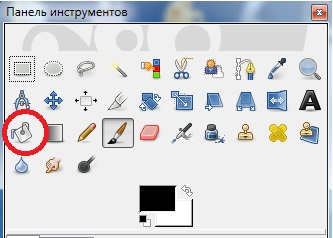

Плоская заливка
Инструмент Плоская заливка позволяет заливать однотонные регионы определенным цветом или текстурой.

Параметры инструмента Плоская заливка
Режим — параметр, определяющий способ смешивания заливаемого цвета с цветом монотонной области, к которой применяется инструмент.
Непрозрачность — параметр, позволяющий задать степень непрозрачности заливаемого цвета. Например, задав минимальное значение данного параметра, можно не полностью заливать отдельные регионы, а лишь корректировать их оттенок, накладывая почти прозрачный цвет.
Тип заливки — здесь можно определить, что именно будет выступать в качестве заливки:
• Цвет переднего плана — заливка будет осуществляться цветом ближнего к нам квадратика с цветом на панели инструментов;
• Заливка фона — в качестве заливки применяется цвет дальнего квадратика на панели инструментов;
• Текстурой — вариант, при котором заливка будет осуществляться с применением определенной текстуры. Весьма интересный вариант, так как позволяет быстро совмещать некоторые изображения. Список разнообразных текстур раскрывается при нажатии на кнопку с изображением варианта текстуры.
Область применения — опция, определяющая сферу действия инструмента. В случае выбора первого варианта — Заполнить все выделение — область применения инструмента будет ограничиваться не монотонными регионами, а выделенными при помощи специальных инструментов. В случае выбора второго варианта — Заполнить похожие цвета — инструмент как раз заливает лишь монотонные области. Второй вариант является более классическим.
Заполнить прозрачные области — режим, при котором инструмент Плоская заливка способен также заливать и прозрачные области. Если отключить данный параметр, инструмент не будет воздействовать на прозрачные области изображения. (Смотри Слои).
Сводить слои — данная опция позволяет определять монотонные регионы не только по одному выделенному слою, но и по всем слоям, из которых состоит изображение.
Порог — этот ползунок позволяет задать степень отклонения цветов внутри монотонного региона. Проще говоря, чем выше значение данного параметра, тем менее однотонным может быть заливаемый регион. Нередко бывают ситуации, когда он не совсем монотонен: на поверхности встречаются какие-то мелкие блеклые пятна и т. д. В таком случае достаточно лишь увеличить значение параметра Порог, чтобы Плоская заливка игнорировала подобные легкие отклонения от общего оттенка монотонного региона.
Тип заливки — здесь можно задать основной объект поиска при определении инструментом монотонных регионов. Например, если вы выберете здесь вариант Синий, то инструмент станет определять лишь монотонные регионы синего оттенка — от светло-синего до темного, насыщенного синего цвета. При этом стоит отметить, что человек и программа воспринимают цвета по-разному. Для GIMP 2 любой цвет представляет собой совокупность трех цифр, выражающих степень использования красного, зеленого и синего цветов. Именно ориентируясь по этим цифрам, программа определяет цвета. Поэтому не удивляйтесь, если ваши представления о цвете и представления о нем GIMP не совпадут.
Таким образом, при помощи инструмента Плоская заливка можно по-разному заливать разнообразные регионы изображения.